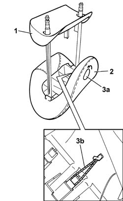

7045D51 Front seat head restraint cover, left or right - R.R. with head restraint removed
- Path
- Procedures > 70 FITTINGS > 7045 FRONT SEATS > 7045D RIVESTIMENTO/IMBOTTITURA SEDILI ANTERIORI > 7045D51 Front seat head restraint cover, left or right - R.R. with head restraint removed
- Kind
- repair procedure (removal / refitting; the operation number is the code)
- Applies to
- all engines; all production periods
- Interactive page
- https://sloeber94.github.io/elrnDB-lThss/en/#/194797
Applies to: all engines; all production periods
 Removing
Removing
 Refitting
Refitting1. Release the inner trim and remove it.
2. Release the head restraint cover.
3. Rotate the head restraint button (3a) in an anti-clockwise direction until the inner retaining code (3b) can be released.

Applies to: all engines; all production periods
Refitting
Removing- Fasten the head restraint button retaining cord and fit the head restraint cover, moulding it on the upholstery.
- Fit the inner trim.
- Rotate the button in a clockwise direction.